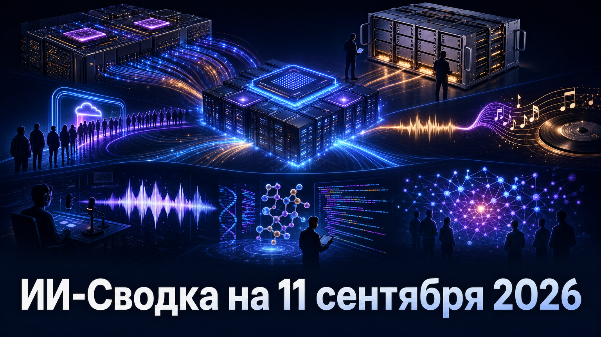

Конкуренция в ИИ всё заметнее переносится на уровень инфраструктуры, доступности продуктов и лицензированных данных. Сегодняшняя повестка связывает кастомный кремний и сетевую ткань дата-центров с дефицитом мощностей у OpenAI, а также с новыми моделями монетизации генеративного контента.
Параллельно российский рынок получает открытый reasoning-релиз, а применение ИИ в биоинформатике показывает, что ценность ассистентов всё чаще измеряется их местом в реальном исследовательском процессе, а не только демонстрациями модели.
Qualcomm и AWS заключили многопоколенческое соглашение о совместной разработке кастомного кремния для крупных ИИ-дата-центров Amazon и высокопроизводительных оптических соединений. Как сообщает IT Pro, проект охватывает технологии SerDes и optical DSP Qualcomm с целевой пропускной способностью до 1,6 Тбит/с и выше.
Сделка важна тем, что затрагивает сразу вычислительные компоненты и сеть, связывающую ускорители в кластеры. Издание также сообщает о варрантах Qualcomm на покупку до 25 млн акций Amazon, зависящих от закупок продукции Qualcomm; финансовые условия и технические параметры пока стоит рассматривать как данные отраслевой публикации, а не как полный официальный контракт.
Разработчик inference-чипов d-Matrix сообщил, что будет использовать NVIDIA NVLink Fusion для подключения следующего поколения своих Raptor XPU к инфраструктурной платформе NVIDIA. В анонсе NVIDIA говорится о сочетании NVLink для масштабирования внутри системы, Spectrum-X для сетевого масштабирования и стоечной архитектуры MGX.
Для рынка это ещё один пример того, как поставщики специализированных ускорителей выбирают совместимость с инфраструктурным стеком NVIDIA вместо полностью изолированной платформы. Заявление исходит от партнёров сделки, поэтому практические сроки развёртывания, производительность и коммерческий масштаб Raptor XPU пока не раскрыты.
OpenAI временно прекратила оформлять новые подписки на ChatGPT Pro стоимостью 200 долларов в месяц. По данным TechCrunch, руководитель продуктов компании Тибо Соттьо связал решение с беспрецедентным спросом на Astra и нагрузкой на инфраструктуру; API, а также тарифы Go и Plus продолжают работать.
Это существенное новое следствие запуска Astra: ограничение затронуло не тестовый доступ, а коммерческую подписку верхнего уровня. OpenAI не раскрыла объём спроса, число потенциально затронутых клиентов и длительность паузы, поэтому говорить о масштабе дефицита мощностей пока преждевременно.
Universal Music Group заключила с ElevenLabs многолетнее лицензионное соглашение для разработки отдельной музыкальной ИИ-платформы. Как пишет The Verge, пользователи смогут создавать ремиксы, mashup-композиции и новые интерпретации произведений из каталога UMG, а участие артистов будет добровольным.
Сюжет важен как сдвиг от споров об обучающих данных к продуктам с согласованными правами на каталог и выбором со стороны исполнителя. Сроки запуска, финансовые условия, состав доступного каталога и правила распределения доходов не раскрыты; это пока анонс платформы, а не готовый массовый сервис.
Индийская аудиоплатформа Pocket FM сообщила о росте годового revenue run rate до 500 млн долларов — примерно вдвое за год. По данным TechCrunch, компания заявляет, что ИИ участвует в создании 93% всего каталога и 99% нового контента, используя собственные инструменты для написания и синтеза речи.
Этот кейс показывает экономику генеративного ИИ в массовом медиапроизводстве: CEO Pocket FM оценивает снижение стоимости создания контента примерно в 80 раз. Однако run rate не равен аудированной годовой выручке, а показатели доли ИИ-контента и экономии предоставлены самой компанией и не имеют независимой проверки в материале.
OpenAI опубликовала кейс лаборатории Сесара де ла Фуэнте, которая ищет потенциальные антимикробные молекулы в геномных и белковых данных живых и вымерших организмов. Согласно публикации OpenAI, команда использует ChatGPT и Codex для подготовки и уточнения кода, обработки наборов данных, анализа результатов и формулирования исследовательских гипотез.
Материал показывает роль языковых моделей и coding-агентов как вспомогательного слоя в биоинформатическом workflow, а не как замены лабораторной проверки. Это кейс поставщика продукта, а не независимая научная работа: публикация не сообщает о новых клинически подтверждённых препаратах и подчёркивает необходимость экспериментальной валидации прогнозов.
Сбер представил GigaChat 3.5 Reasoning — языковую модель с режимом последовательного рассуждения. Как сообщают «Ведомости», компания намерена опубликовать исходный код по лицензии MIT, предоставить модель пользователям GigaChat и позднее открыть API для бизнеса.
Сочетание reasoning-режима, открытой лицензии и планируемого корпоративного API может расширить возможности самостоятельного развёртывания и адаптации российских LLM. Заявление о том, что это первая российская открытая reasoning-модель, остаётся позицией Сбера: независимого сравнения с другими отечественными моделями и бенчмарков в доступном материале нет.